Straight from the mantle
Magmatic ore deposits form inside the magma itself, while it crystallises, not from fluids that leave it later. The main families are nickel-copper sulphide deposits (Archaean komatiite-hosted, mafic intrusion-related conduits, and layered mafic-ultramafic complexes), primary platinum group element (PGE) deposits, chromium-vanadium-titanium oxide deposits (layered complexes and podiform chromitites), phosphorus deposits in syenites and carbonatites, rare earth deposits, and diamonds in kimberlites and lamproites. All of them come from primary, mantle-derived magmas. slide 4
Ian has worked in this field since he was a student: an honours project on PGEs in podiform chromitites at Mount Lightning in southern NSW, a PhD on the chromitites of the Tumut Serpentinite Province, a postdoc on the Bushveld Complex in South Africa and consulting on nickel in Laos. Podiform chromitites matter because they supply metallurgical-grade chromium, the chromium in chrome steel. slide 3 lecture recording, 28 Sep
This lecture covers the petrology you need and the nickel-copper sulphide deposits hosted by komatiites. Lecture 8 picks up the mafic intrusions, PGE, oxide, phosphorus and nickel laterite deposits.
Petrology refresher: names that matter
Keep two kinds of name apart. Acid, intermediate, basic and ultrabasic are chemical terms, based on silica. Felsic, mafic and ultramafic are mineralogical terms, based on what the rock is made of. They usually line up, but they mean different things. slide 6
| Chemical name | SiO₂ | Mineralogy | Example |
|---|---|---|---|
| Acid (felsic) | over 63% | mostly feldspars and quartz | granite |
| Intermediate | 55 to 63% | mostly feldspars, some ferromagnesian minerals | andesite |
| Basic (mafic) | 45 to 55% | mostly dark minerals plus plagioclase | basalt, gabbro |
| Ultrabasic (ultramafic) | under 45% | olivine and pyroxene, or hornblende | dunite, peridotite |
Magmatic ore lives in the ultramafic and mafic end. Among the gabbroic rocks, norite (a pyroxene-rich gabbro whose pyroxene is orthopyroxene) is the one to remember: it hosts much of the world’s PGE and some of its sulphide ore. Among ultramafic rocks, name them by olivine, orthopyroxene and clinopyroxene. (olivine plus orthopyroxene) makes up most of the oceanic mantle; (olivine with both pyroxenes) most of the continental mantle; wehrlite and websterite are much rarer. slides 6 and 7 lecture recording, 28 Sep
Name the ultramafic rock0 / 4 named
Tap anywhere in the triangle. Each corner is 100% of that mineral.
Field boundaries follow the standard ultramafic triangle: dunite over 90% olivine, peridotites 40 to 90%, pyroxenites below that.
The olivine problem
A basic or ultrabasic magma can separate into two liquids that won’t mix, like oil and water: a silicate melt and a much denser . That immiscible sulphide liquid separates at 1200 to 1400 °C, the top of Bowen’s reaction series. Nickel, copper and the PGEs prefer the sulphide liquid. slide 8
The catch is olivine. In Bowen’s series it crystallises first from a basic magma, and nickel fits neatly into its structure in place of magnesium. If olivine grows early, it soaks up the nickel, and none is left for the sulphide. So the key point on the slide is olivine suppression: to make a nickel sulphide deposit, the magma has to skip early olivine and crystallise pyroxene first. Three things can do that, all forms of contamination: slides 7 and 8 lecture recording, 28 Sep
And if olivine isn’t suppressed? The nickel stays dispersed in olivine. That rock can still become ore much later, when weathering breaks the olivine down and concentrates nickel in a laterite. lecture recording, 28 Sep
Cool a basic magma1400 °C
Order of crystallisation from slide 8 (1200 to 1400 °C at the top, 700 to 800 °C at the bottom); spacing between minerals is schematic.
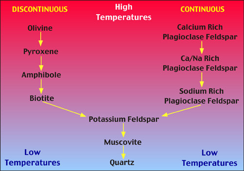
- Sulphide melt is immiscible with silicate melt and separates at 1200 to 1400 °C; Ni, Cu and PGE go into it.
- Olivine crystallising early steals the nickel. Suppress olivine (silica, iron or reducing contamination) and nickel goes into the sulphide.
Settling out: segregation and cumulates
Once dense minerals or droplets form, gravity does the concentrating. Heavy minerals crystallise, sink to the floor of the magma chamber and pile up as a layer or band. That’s segregation. It can concentrate chromite, magnetite, ilmenite, and immiscible sulphides carrying Cu, Ni, Pt and the other PGEs. slides 9 and 10
| Mineral or melt | Specific gravity |
|---|---|
| Felsic magma | 2.2 |
| Mafic magma | 2.8 |
| Plagioclase | 2.8 |
| Enstatite (orthopyroxene) | 3.3 |
| Olivine | 3.3 to 4.2 |
| Chalcopyrite | 4.2 |
| Chromite | 4.5 to 4.8 |
| Magnetite | 5.1 |
| Gold | 15 to 19 |
| Platinum | 14 to 21.5 |
Plagioclase has about the same density as a mafic magma, so it doesn’t sink; it tends to float to the top of the chamber, as you see in the Bushveld and other layered intrusions. The spinels (chromite, magnetite), the sulphides and the platinum group minerals sink readily. slide 9 lecture recording, 28 Sep
Let the chamber settleready
Each particle sinks at a speed that grows with how much denser it is than the 2.8 magma.
The classic example is the Merensky Reef in the Bushveld gabbro-norite of South Africa: a layer only 1 to 5 m thick, rich in Pt, Fe, Ni, Cu and Cr. Ian’s view is that a reef that thin could probably never be mined anywhere else; it was mined because of the labour available there. slide 10 lecture recording, 28 Sep
Where the big deposits are
There are two broad kinds of primary Ni-Cu sulphide deposit. Archaean komatiite-hosted deposits are concentrated in the Norseman-Wiluna greenstone belt of Western Australia and the Abitibi greenstone belt of Canada. Mafic intrusion-related deposits include Voisey’s Bay (Canada), Jinchuan (China; many pipe-like bodies rather than one intrusion, and most of China’s nickel), Pechenga and Norilsk (Russia), Sudbury (Canada), Kabanga (Tanzania), the Duluth Complex (Minnesota) and the Giles Complex in the Musgrave Ranges, on the South Australia-Western Australia border. slide 11 lecture recording, 28 Sep
Grade and tonnage pull against each other: the highest-grade deposits tend to be small, the biggest tend to be low grade. Victor and Cosmos in WA run over 10% Ni but only around a million tonnes; Duluth is the biggest of all but very low grade. Norilsk is the exception: big and rich. slides 14 and 15
The largest Ni-Cu-(PGE) sulphide depositstap 4
Data from slide 15. Contained nickel = tonnes × grade, worked out here.
One oddity Ian mentioned: Avebury in Tasmania was a remobilised nickel deposit. Devonian granites intruded ultramafic rocks, and heat-driven convection pulled nickel out of the ultramafic silicates and concentrated it on the granite contact. It was high grade but small, in very rough ground, and it closed. lecture recording, 28 Sep
How laterites took over
Primary sulphides used to be the main source of the world’s nickel, mostly from Norilsk and Sudbury. Now laterites supply around 65%, and production is dominated by Indonesia, the Philippines and New Caledonia. The laterites were known in the 1950s but were too expensive to process; new processing techniques changed that. Indonesia’s rise was paid for largely by Chinese investment in processing plants on Sulawesi, which treat ore from many small deposits through one central plant. slides 16 and 17 lecture recording, 28 Sep
Main nickel producers (t Ni)2023
Slide 17, source USGS 2026.
Australia fell from 160 000 to 45 000 t because it can’t compete on cost; ten years ago it was second only to Canada. Mount Keith is still the biggest Australian operation, and most of Kambalda is on hold. Platinum is a valuable by-product: even at about 0.6 g/t, WA nickel ore gets a useful bonus from it. South Africa dominates platinum production through the Merensky Reef. slide 16 lecture recording, 28 Sep
What the ore is made of
In these deposits you see pyrrhotite almost everywhere: it makes up the bulk of the sulphide. It is a nuisance. It oxidises very fast, and the reaction gives off heat; in some WA nickel mines the waste piles have caught fire on their own. The mineral you actually want is pentlandite, by far the main nickel mineral, as small grains or along fractures in the pyrrhotite. Chalcopyrite is the only common copper mineral. Minor minerals are millerite (NiS, in the supergene zone), the PGE minerals cooperite ((Pt,Pd,Ni)S) and sperrylite (PtAs₂), and magnetite. Gangue is olivine, pyroxene and plagioclase. Grades vary from 0.2% to 12% Ni. slide 18 lecture recording, 28 Sep
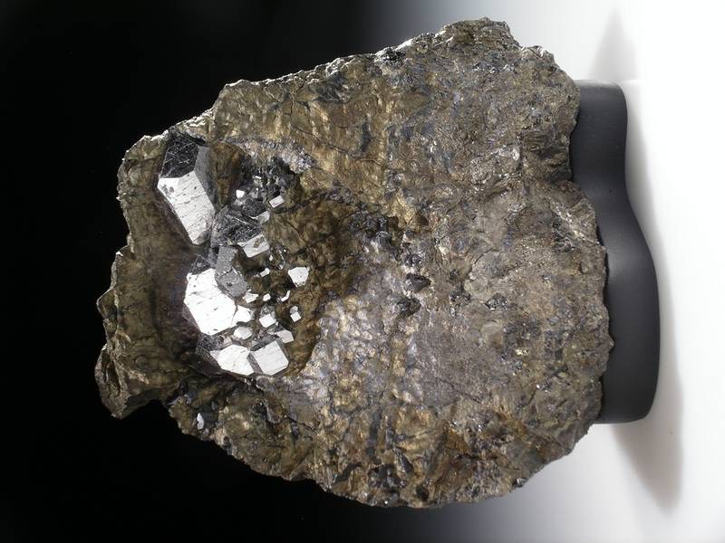
Which mineral?0 / 5
- Pentlandite always comes with pyrrhotite: in reflected light, pale yellow, isotropic, intergrown with bronze pyrrhotite (Lecture 4).
- Pyrrhotite is the bulk of the ore; some of it is magnetic.
- Sudbury, Kambalda and Coolac are the magmatic deposits in the ore suites.
Komatiites: lava like water
The komatiite-hosted deposits formed in the Archaean, 2.7 to 3.0 billion years ago, when the mantle was much hotter. are ultramafic lavas, almost all olivine and pyroxene, that erupted from submarine fissures at about 1400 °C (modern Hawaiian basalts erupt at roughly 1000 to 1200 °C). They had very low viscosity and flowed like water. They built a pattern of thick, slowly cooling channels with cumulate textures, and thin sheet flows that quenched fast against the cold seawater, giving . Between the flows lay sulphide-bearing sediments: that’s where the sulphur came from. slide 20 lecture recording, 28 Sep
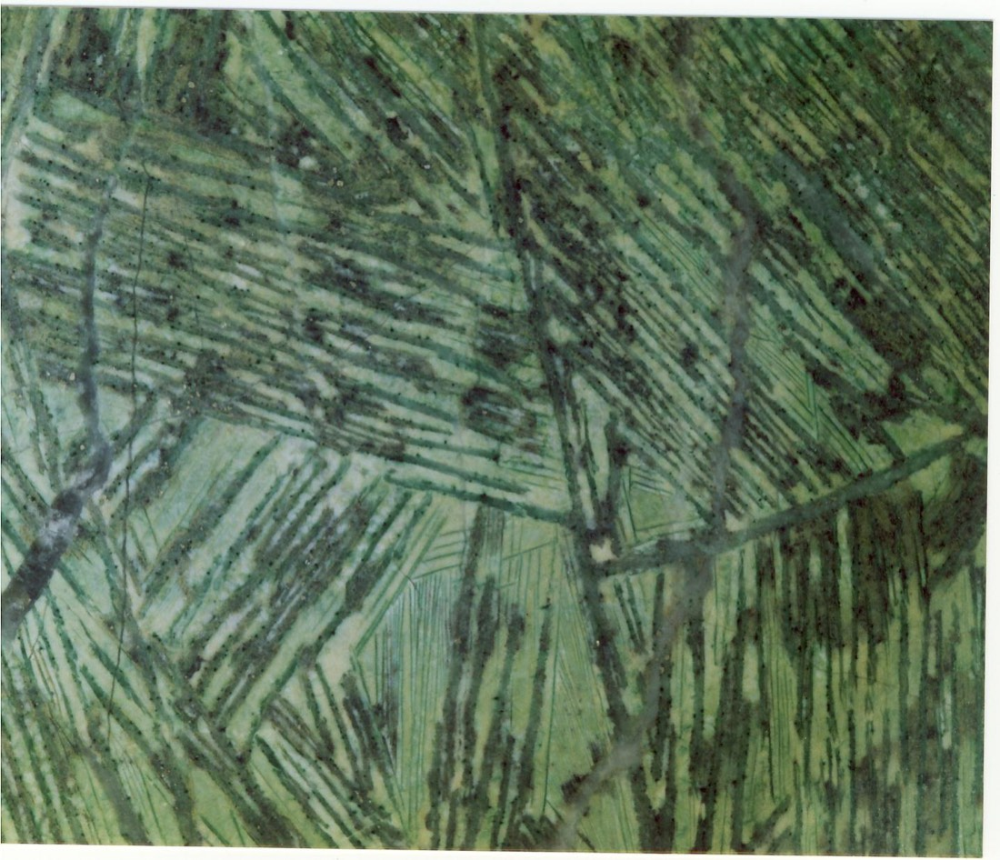
Name the texture. What does it tell you about how this lava cooled?
Show what I see
This is spinifex texture: long, thin, bladed crystals (originally olivine) criss-crossing like the spinifex grass of the WA outback. It forms when ultramafic lava cools very fast, in the thin quenched sheet flows and flow tops. The rock is green because metamorphism turned the olivine to serpentine, which is why the host belts are called greenstone belts.
The Norseman-Wiluna belt runs north from Norseman to Wiluna, with magmatic nickel sulphide deposits and orogenic gold all along it. The nickel is syngenetic (formed with the lavas); the gold is epigenetic and sits in later structures. Later deformation, metamorphism and granite emplacement have masked much of the original igneous character. slides 20 to 22 lecture recording, 28 Sep
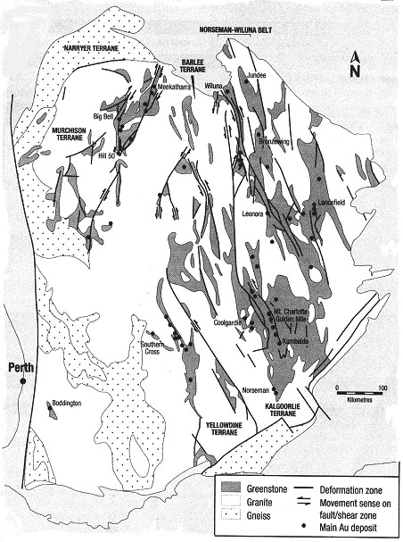
Kambalda: lava rivers
Kambalda sits near Kalgoorlie, beside the salt pan of Lake Lefroy. Canadian explorers in the 1950s and 60s found nothing there, because they explored the Canadian way, on fresh glaciated rock. At Kambalda there’s about 100 m of weathered material on top. An Australian junior, Western Mining, understood weathered terrain and found the nickel quickly with soil geochemistry. lecture recording, 28 Sep
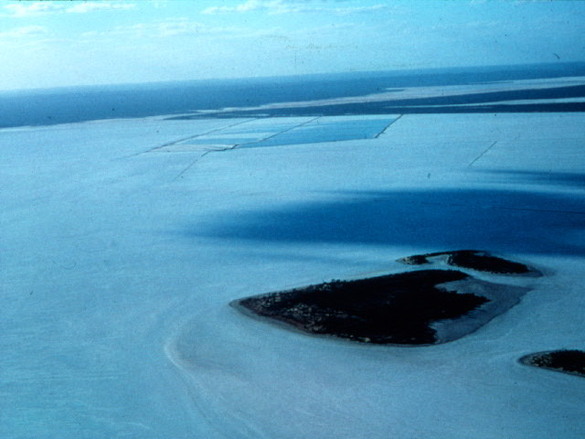
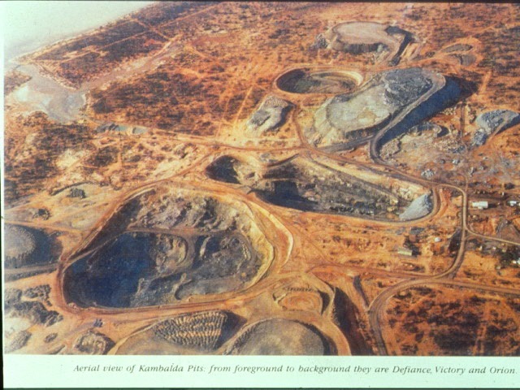
A is Lake Lefroy, a salt lake; one mine runs under it. B shows the Kambalda open cuts in the 1970s. What problem does the salt lake create for mining sulphide ore underneath it?
Show the reasoning
Salt water and oxidising sulphides wreck equipment. Ian has been down that mine: equipment lasts no more than about four years, because everything rusts and the oxidising sulphides make sulphuric acid. It makes mining under the lake very costly. Open cuts (B) were the cheap start when the ore came close to surface.
The Kambalda Dome is probably an old magma chamber, later folded. The nickel ore shoots (Hunt, Red Hill, Lunnon, Victor, Fisher, Durkin and others) sit at the base of the komatiite sequence, on the contact with the footwall basalt, where interflow sulphidic sediments supplied the sulphur. slides 23 and 27 lecture recording, 28 Sep
Think of the lava as a river. Komatiite at 1400 °C, flowing like water, thermally eroded the floor it ran over, cutting embayments into the basalt and melting the sulphide-bearing sediments into the flow. Their sulphur combined with nickel from the lava, and a sulphide liquid separated. What happened next depended on how fast the lava was moving. slide 24 lecture recording, 28 Sep
Run the lava river
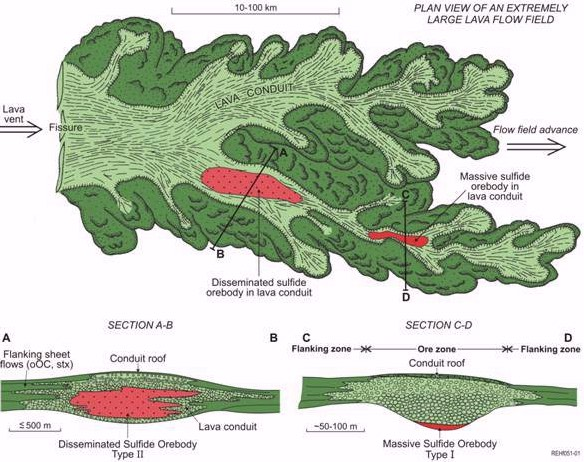
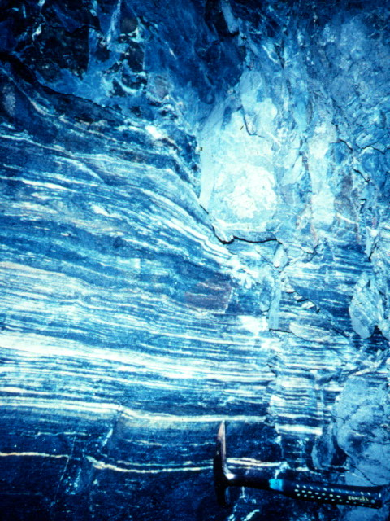
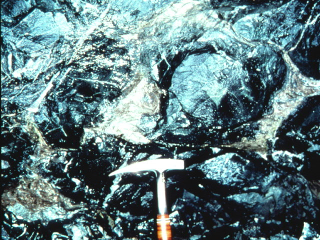
A and B are both ore. Describe how the sulphide sits in each.
Show what I see
A is a banded, nickel-rich cumulate: layers with disseminated sulphides that settled out with the crystals. B is sulphide filling the spaces between basalt pillows: the dense sulphide liquid drained down into gaps in the footwall. Both are segregation; B shows how mobile the sulphide liquid was.
Type 1: the Kambalda ore shoots
Kambalda-style (Type 1) ore sits in lava channels in both flood flow and compound flow facies, usually in the basal flow, with thermal erosion into the rocks below. The bodies are ribbons: 1 to 5 m thick, 50 to 100 m wide and 100 to 700 m long, with aggregates up to 2 km down plunge, mostly under 5 Mt and often under 1 Mt. They are stratified from the base up: slide 32
Then the geology moved them. Folding, faulting and later dykes and stocks have cut and shifted the shoots, so the ore today doesn’t sit where it formed; that’s why drilling is critical. Metamorphism grew coarse pyrite and secondary magnetite in the matrix ore. The magnetite is useful: magnetic surveys can find the ore. Faulting also softened the host, turning ultramafic rock to serpentinite, with talc and magnesite alteration where fluid came through. slides 31 and 32 lecture recording, 28 Sep
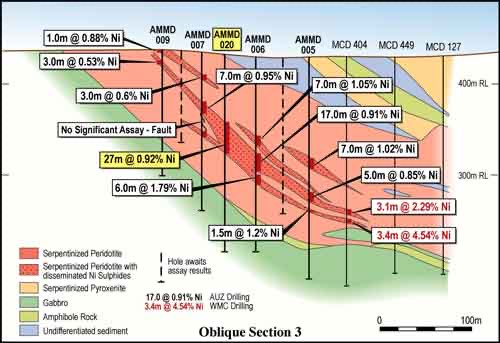
Drill the ore shoot
A Type 1 ore shoot sits on the footwall contact somewhere along this section, and a fault and a later dyke have been through. Tap the surface to drill a vertical hole. Six holes.
Invented section for teaching; zone thicknesses and grades follow slide 32.
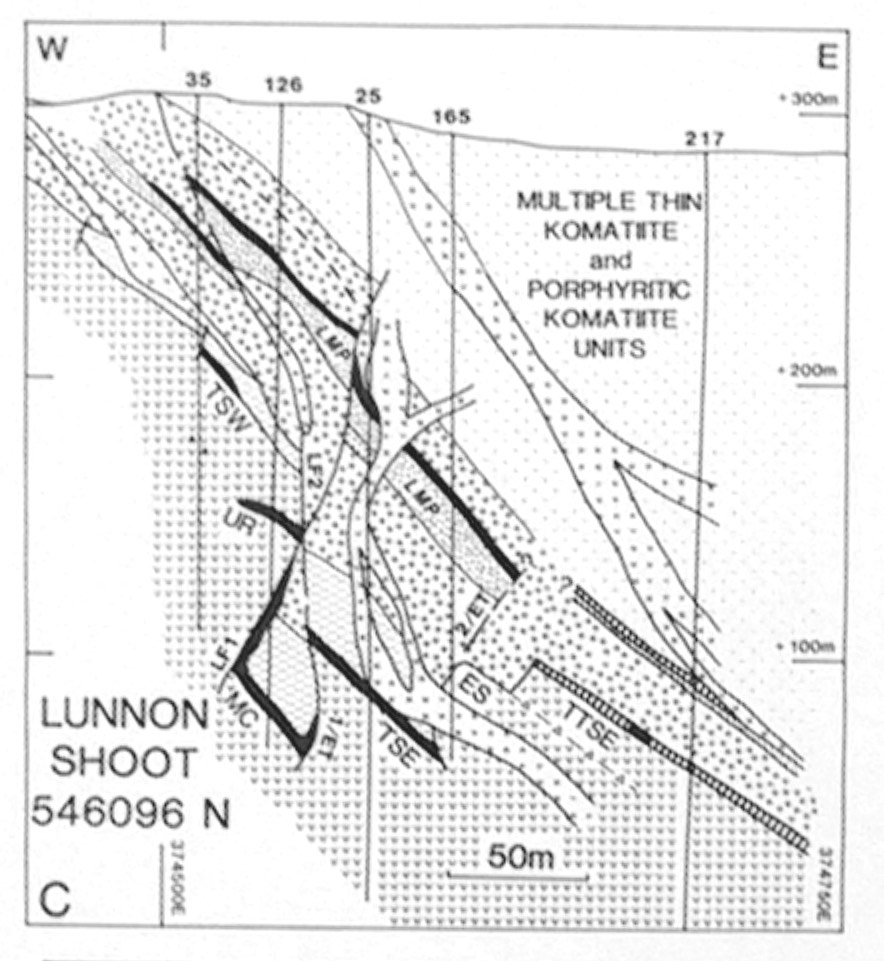
- Type 1 (Kambalda): ribbons 1 to 5 m thick, 50 to 100 m wide, 100 to 700 m long; usually under 5 Mt.
- Massive over 80% sulphide, 2 to 20% Ni; matrix 1 to 6% Ni; disseminated under 40% sulphide, 1 to 2% Ni.
- Kambalda: 162 Mt at 2.07% Ni overall.
Type 2: Mount Keith
Mount Keith-style (Type 2) ore formed in lava channels with transgressive lower contacts, as cumulate flow units within flood flow facies. The orebody is a locally thickened cumulate unit up to 800 m thick, 1 to 3 km wide and over 1 km down plunge. Sulphide is disseminated, only 1 to 5% of the rock, as grains in an olivine cumulate that is now serpentinite, and the grade is under 1% Ni (about 0.6%). It is pentlandite-dominated; copper sulphides appear only in the lower part. Metamorphism and fluids have overprinted it, especially along structures, and it has a long weathering history: when Mount Keith opened, laterite ore was mined first, before the sulphide. slide 33 lecture recording, 28 Sep
Why mine 0.6% nickel? Size and access: Mount Keith is about a billion tonnes (1022 Mt on slide 15), and it could be open cut from the surface. slide 15 lecture recording, 28 Sep
Type 1 or Type 2?0 / 6
Self-test
Answer out loud or on paper before you open each one. Claim the ounces if you got it.
Glossary and flashcards
Terms this lecture assumes or defines quickly. The dotted words in the text open them in place.
Flashcards
Where this goes next
Lecture 8 finishes magmatic deposits: Sudbury, Norilsk and the other intrusion-hosted Ni-Cu deposits, PGE in layered intrusions like the Bushveld, chromite and Fe-Ti-V oxides, phosphorus, and the nickel laterites that now dominate supply. Lecture 13 comes back to the same WA greenstone belts for orogenic gold.